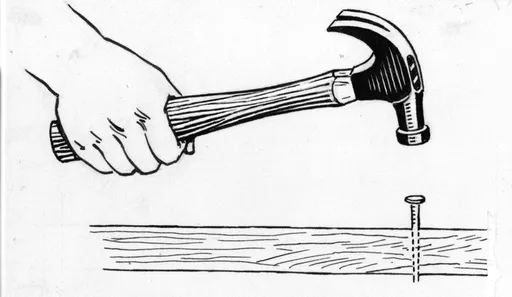
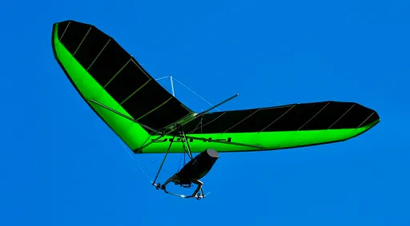
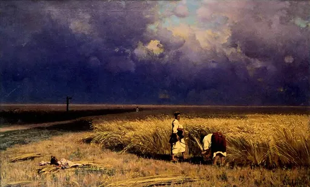
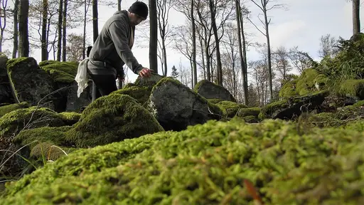
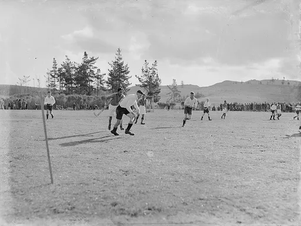
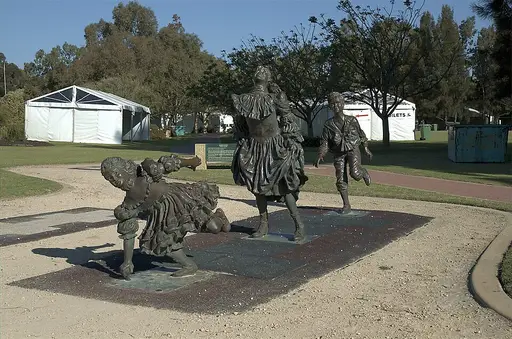
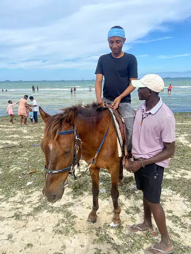

Reject an image by adding its slug to public/charades/charades-actions/reject.txt (append ! to keep it word-only), then re-run node scripts/genimages.mjs.

Hammering a nail hammering-a-nail Public domain · Pearson Scott Foresman · source

Hang gliding hang-gliding CC0 · Airborne88NL · source

Harvesting harvesting Public domain · Vladimir Orlovsky · source

Hiking hiking Public Domain Mark · marcostetter · source

Hockey hockey CC BY 4.0 · Collins, Tudor Washington, 1898-1970, photographer · source

Hopscotch hopscotch CC BY-SA 3.0 · Nachoman-au · source

Horse riding horse-riding CC BY-SA 4.0 · RickyBlair668 · source